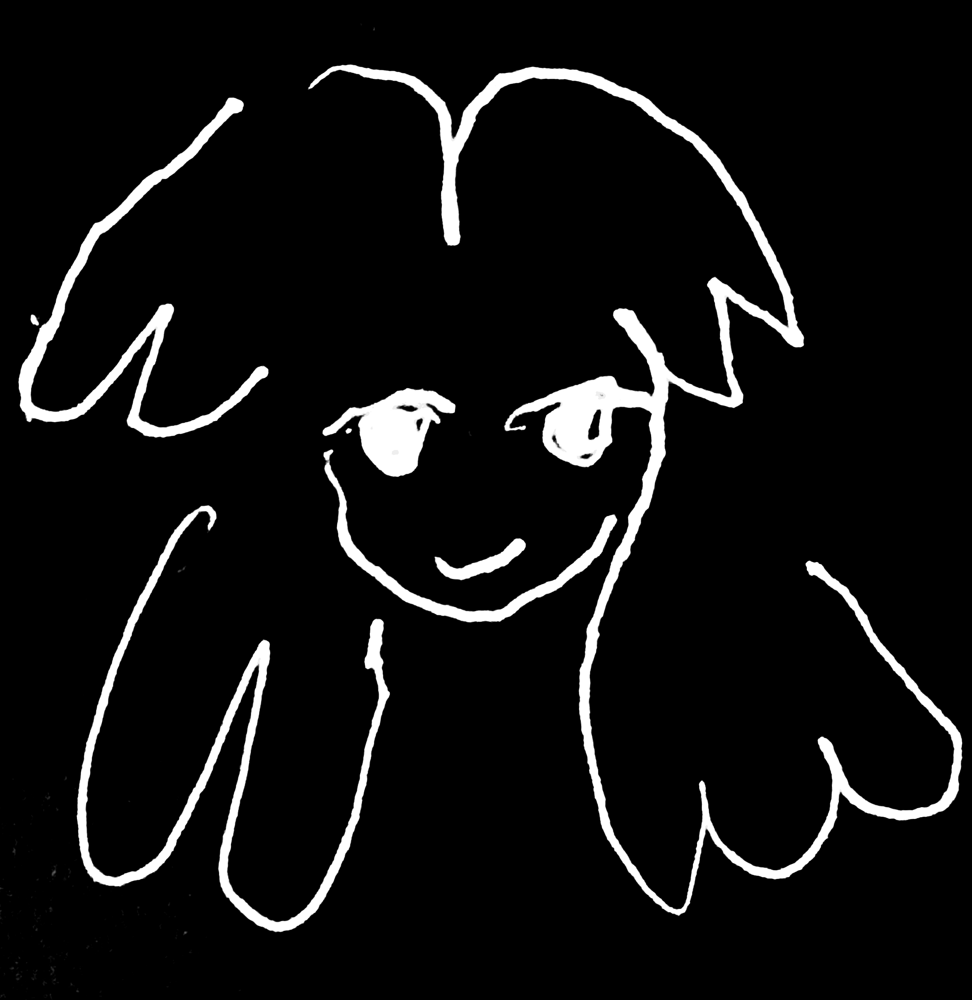

Bio
I am a Ukrainian digital artist based in Prague, Czech Republic. My work focuses on multimedia interactive installations, creation of audio visual performances and sound reactive visualisations. My work often involves experimental use of 3D scans, particle simulations, executed in Virtual Reality or Interactive Installations with projections. I am currently completing my Bachelor degree in Fine Art Experimental Media at Teesside University Prague City.
Recent exhibitions include a Virtual Reality project for an Interactive Virtual Exhibition in collaboration with Flowerbed Gallery, Ukraine. The exhibition took place at Mistechko Gallery, Prague, Czech Republic 2025.
Other activities include a group exhibition Chiral Other at Petrihradska Kolektive, 2025.
Currently I am exploring an experimental approach of working with a concept of archives.
CV
email: kateerkhova@gmail.com
instagram: ktrsya
Artist Statement
My work focuses on memory, space, and time. I 3D scan places and objects, and use them as base materials for further artistic exploration. I am interested in how 3D mediums can be explored as a form of documentation and artistic expression.
For me, 3D is a medium that captures space or objects at a specific time. It becomes similar to keeping a visual diary, which allows me to reinterpret places, moments and memories through their digital reproductions. The process of digitalising material objects creates errors, distortions, and data loss, which is an inherent part of the medium that defines the style and concept of the work.
My practice also includes research-based projects, where I use 3D scans as a tool for cultural preservation. In particular, focusing on Ukrainian contemporary culture, which is especially relevant during an ongoing full scale invasion. By amplifying the distorted look of 3D scans I try to highlight the instability of cultural memory that is under threat.
Despite the disparity of mediums that I work with, they all intersect in their digital nature, and are later transformed into different mediums such as: images, videos, interactive installation, audio visual performances, and websites. The medium determines how the viewer experiences and interacts with the artwork.